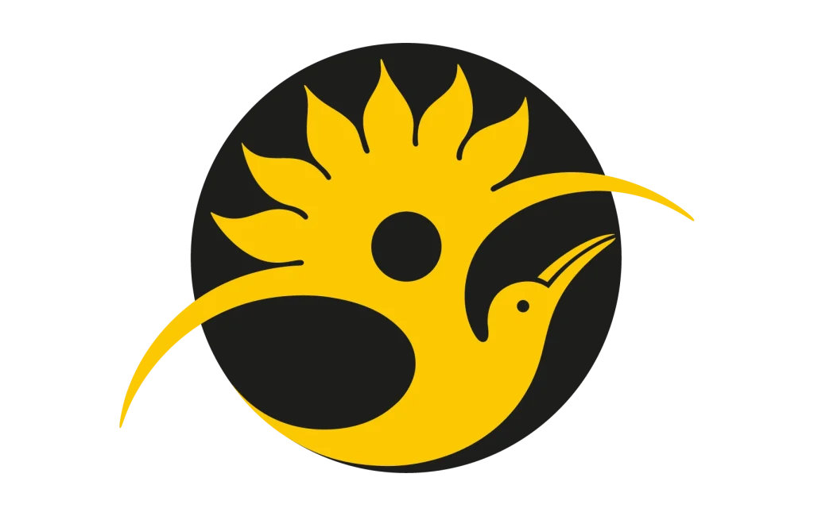

Tres Historia, Un sueñoNestor Yudier Perea Valencia
Fanny Zuleyka Martinez Lloreda
Darwin Becerra Cabrera
Nestor
Soy un joven de 17 años en constante aprendizaje, estudiante de Ingeniería de Sistemas, apasionado por superar mis propios límites a través de la disciplina física y aprendiendo nuevas habilidades por mi cuenta. Me defino como una persona con alta voluntad y empática, que valora un entorno tranquilo y sin presión. Estoy enfocado en mejorar cada día, sin importar las circunstancias.
Fanny
Soy una persona amable, cariñosa, alegre y empática. Nací en Quibdó y valoro profundamente a mi familia, especialmente a mi mamá, mi papá y mis hermanos, quienes son mi mayor apoyo. Me gusta bailar, sentirme libre y disfrutar cada momento. A lo largo de mi vida he enfrentado decepciones que me han enseñado a ser más fuerte y a valorar a quienes realmente están conmigo. Mi graduación es uno de mis mayores logros y representa el primer paso hacia mi mayor sueño: alcanzar una vida estable y construir el futuro que deseo.
Darwin
Soy un joven de 17 años en constante aprendizaje y evolución constante,soy una persona con alta voluntad y empática, que valora un entorno tranquilo y sin presión. Estoy enfocado en mejorar cada día, sin importar las circunstancias. Estoy enfocado en cumplir cada unas de mis metas planteadas.
Nestor
Para este curso quiero aprender nuevos conocimiento, afrotar diferentes situaciones para mejorar mis habiliades tecnica y personal y lo más importante todo esto es divertirme.
Fanny
Para este curso espero adquirir nuevos conocimientos y fortalecer mis habilidades para comprender cómo funciona los diferentes lenguajes de programación y también espero aprender a desarrollar programas y aplicar estos conocimientos en mis futuros proyectos
Darwin
Para este curso espero adquirir nuevos conocimientos y fortalecer mis habilidades para mejorar mi desempeño en el área de la programación y realizar proyectos interesantes.